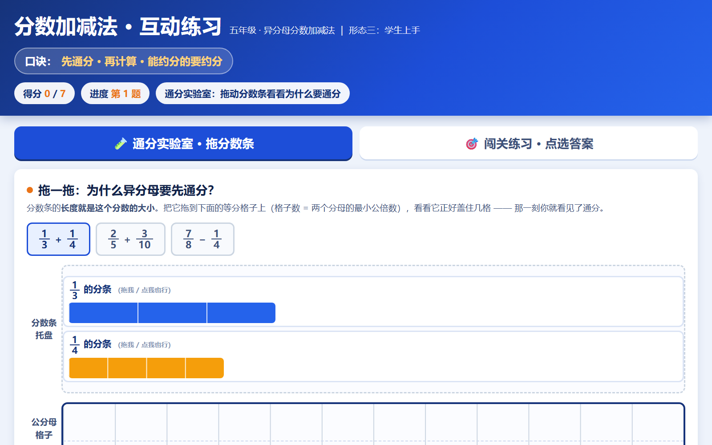
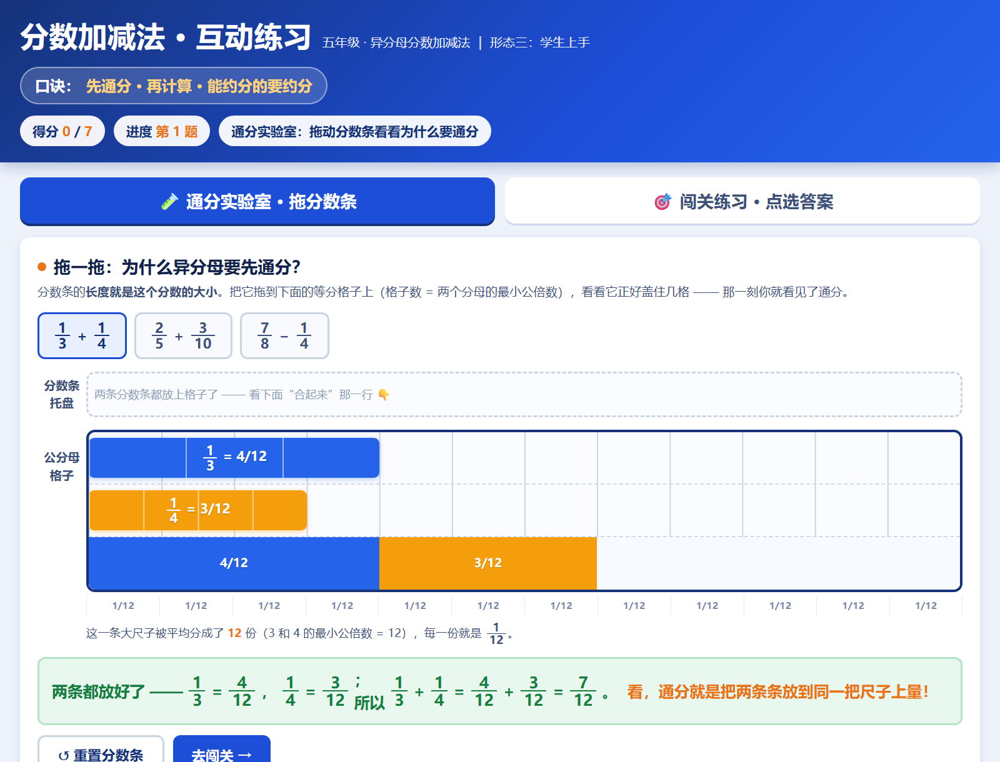
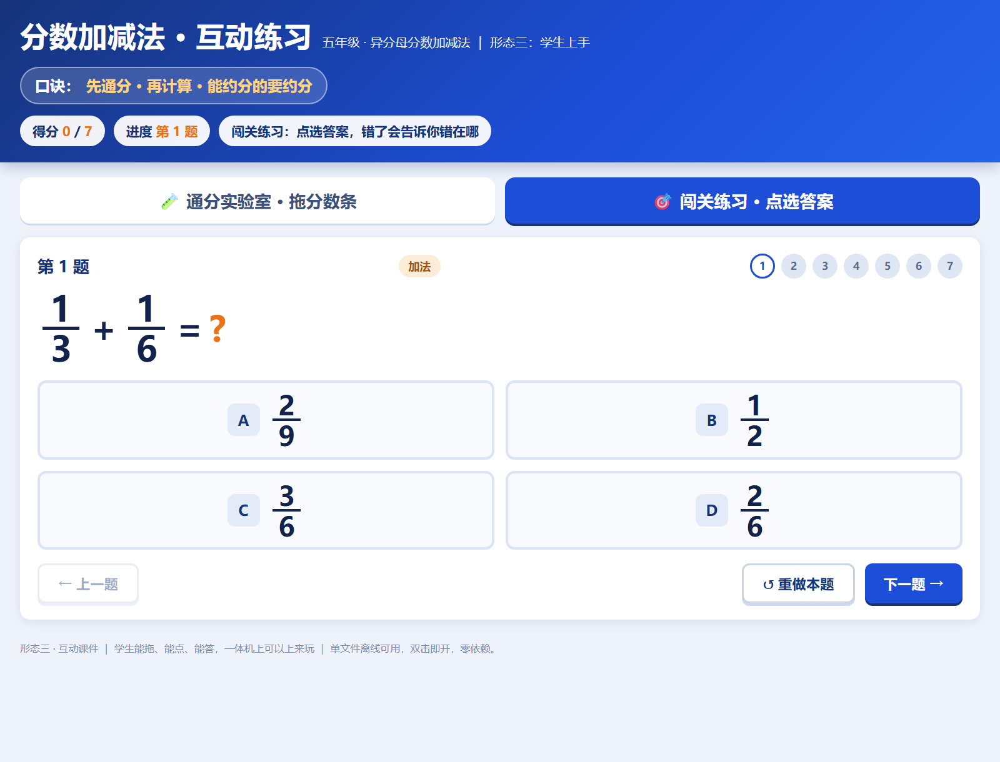
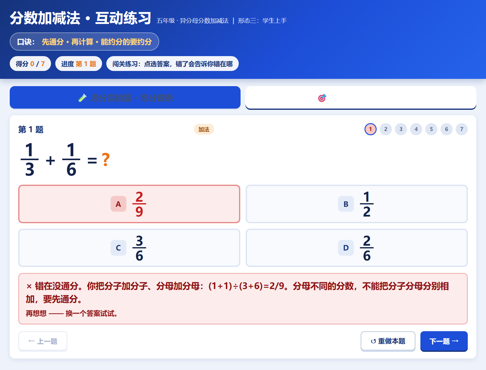
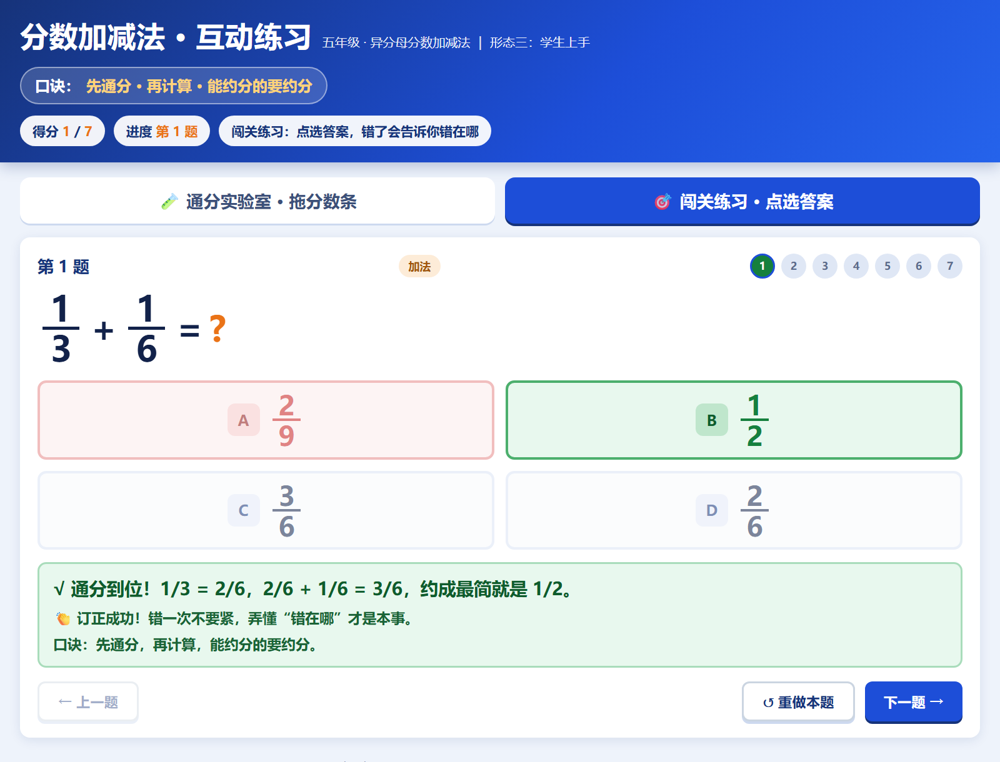
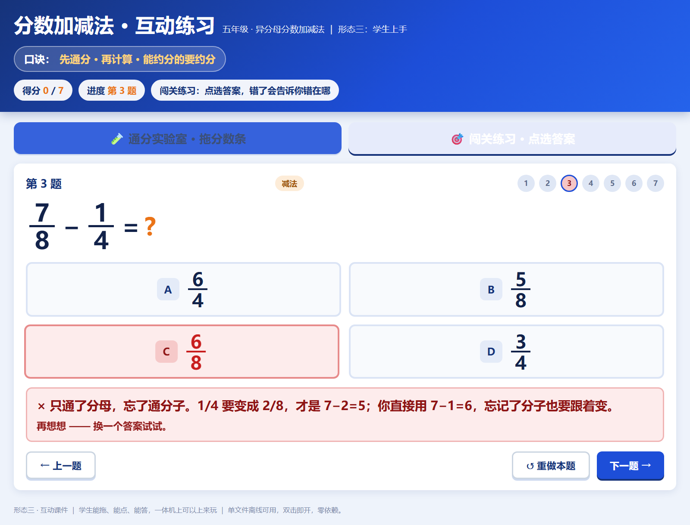
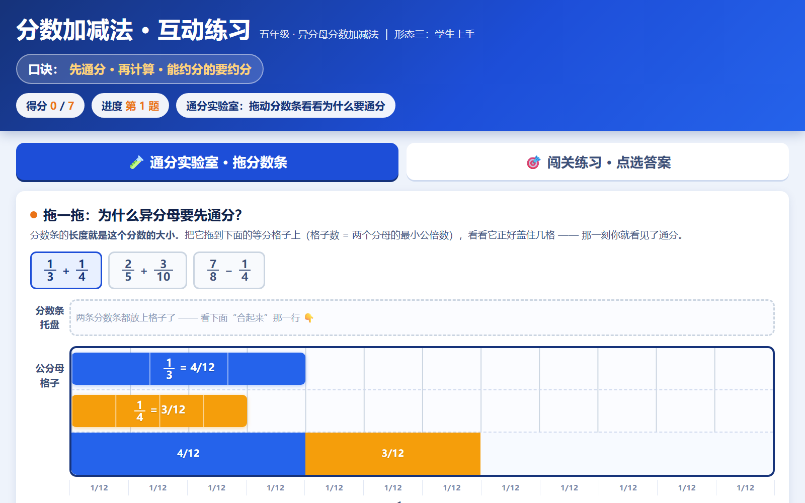

这个痛点，是不是你
痛点卡 · 案例04-3 形态三·互动课件
依据《子Agent执行规范》〇「痛点先行」与〇补「痛点提取细则」填写。
手册出处：《WorkBuddy 教师实操手册》第04章《新形态课件：让知识点动起来》。
一、痛点原句（逐字引用手册，注明章节出处）
出处1 · 章首导入（第04章「一、你做课件，是不是"上课放完就没了"？」）
"传统做课件的流程，你应该很熟：翻教材、想结构、开PPT、一页页做、找配图、排版对齐。一套下来两三个小时，其中一半时间花在排版对齐这种机械操作上。"
"更扎心的是，你辛苦做的PPT，上课放完，学生下课就忘了。它完成了一次"展示"，但没有留下任何能让学生课后带走的东西。"
出处2 · 形态三案例引入（第04章「形态三：互动课件，让学生动手玩」）
"形态二是"会动的网页"，这一形态再进一步：学生能亲手操作。"
"还是"分数加减法"。形态二你看到的是翻页演示，形态三做出来的是可交互的练习：给几道异分母加减的题，学生拖动分数条、点选答案，做对了有反馈，做错了提示错在哪。"
"WorkBuddy直接生成交互页面，浏览器打开就能用，一体机上学生可以上来点。形态二老师演示，形态三学生上手。"
痛点识别信号：手册用"形态二老师演示，形态三学生上手"这一组对照，点出"学生只能看、不能动手"这一绑定动作量的具体抱怨（"看"vs"上手"），符合规范〇补"绑定时长/动作量"的识别信号。
二、痛点主体
小学五年级数学老师，正教《分数加减法》单元第2课时"异分母分数加减法"； 学生基础：已学同分母分数加减法、约分、通分（见 输入素材/分数加减法_备课素材.docx）。 备课素材自陈的难点正是："理解通分的必要性，会找最小公倍数作为公分母"。
三、旧做法的代价
以前上这节课的练习环节，老师只能：
- 在黑板/PPT上演示通分过程，学生当观众——看得懂，不等于会做；
- 练习靠口头报答案、举手抽查，全班不能同时参与，一节课点不了几个人；
- 学生错了只知道"错了"，不知道错在哪一步（是没通分？只通分母忘通分子？还是忘记约分？），老师逐个批改才能诊断；
- 想让学生亲手"摆一摆"分数条，得准备实物教具，或课后对着作业本一个个讲。
四、想要的目标
一个浏览器双击就能打开、离线可用的互动练习页：
- 学生能亲手拖动分数条，把 1/3、1/4 拖到 12 等分的格子上，亲眼看见 1/3=4/12、1/4=3/12——让"为什么要通分"从老师的口头结论变成学生自己的发现；
- 每道题点选答案、即时反馈：做对了给正向反馈和口诀，做错了具体指出错在哪（公分母找错/忘记约分/只通分母忘通分子）；
- 字号大、按钮大（≥56px），适合课堂投屏和一体机，学生能上来点；
- 覆盖异分母加法 + 减法 + 应用题，含手册与备课素材点名的三类易错点。
五、【补全】
手册在形态三只给了"学生能亲手操作"的方向，没讲透"为什么值得解决"。此处补全：
异分母分数加减的真正难点不在"计算步骤"，而在"理解通分的必要性"（备课素材原话）。老师演示一百遍"要先通分"，学生的身体没有参与，知识点就没有真正"长在自己身上"——一动手仍然会把分子分母分别相加（1/2+1/4 写成 2/6）。让学生亲手把 1/3 的条拖到 12 等分的格子上，眼睛看见这条正好占满 4 格，"为什么要通分"才变成看得见的事实；而点选答案时那句"公分母找错了，12 才是 3 和 4 的最小公倍数"，把学生原本"错了也不知道为什么"的黑箱，变成当堂可诊断、可纠正的一步。这才是这个互动课件真正解决的问题：把不可见的过程变可见，把不可诊断的错误变可诊断。
六、价值归类
✅ 目标导向——解决的是"学生被动听、通分必要性讲不透、错误无法当堂诊断"这一真实教学问题，产物为教学目标服务（让难点可见、让反馈即时）。 ❌ 不是"工具理性"——不是"因为有个网页工具所以做个网页"，也不是"为了好看而做互动"。
AI 是怎么解决的
产物 · 可直接交互
在框内直接交互，或点"新窗口打开"占满浏览器体验完整版。
质检图
构建自核验截图，点击查看原图





